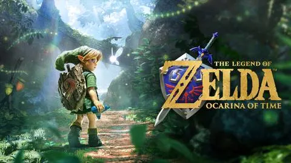
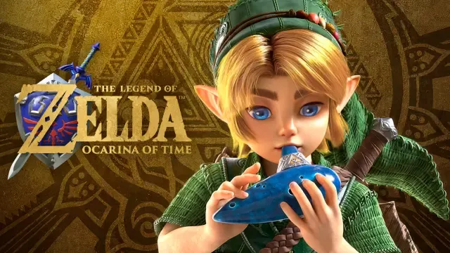
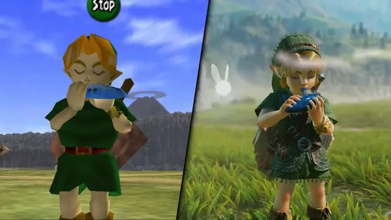
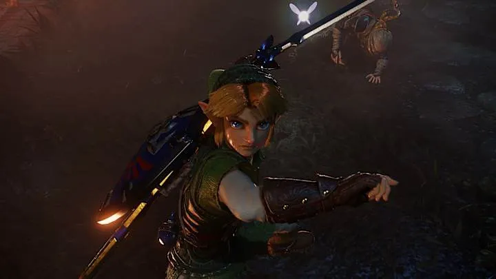
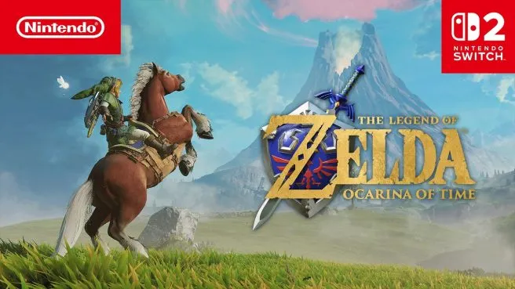

Ocarina of Time vuelve en Switch 2: fecha y precio

Hyrule vuelve a abrir sus puertas en Switch 2.
Nintendo anunció el remake de The Legend of Zelda: Ocarina of Time en el Nintendo
Direct del 9 de junio de 2026, como parte del 40 aniversario de la saga. El juego,
exclusivo de Switch 2, salió a la venta el 5 de noviembre por 59,99€ en digital
y 69,99€ en formato físico, casi 28 años después del original de Nintendo 64.
Todo lo que cambia en el remake

La ocarina vuelve a sonar con una versión renovada.
Más allá de unos gráficos reconstruidos, el remake incorpora salto manual, correr,
cámara libre, voces en todos los diálogos y un nuevo registro de misiones. Es
una forma de acercar el clásico a los controles actuales sin cambiar la
esencia de la aventura.
Del Nintendo 64 a Switch 2: casi 28 años de historia

Un clásico que ha pasado por tres generaciones de consolas.
Ocarina of Time salió en Nintendo 64 en noviembre de 1998 en Estados Unidos y
Japón, y en diciembre en Europa y Australia. Fue el primer Zelda en 3D. En 2011
llegó a Nintendo 3DS con Ocarina of Time 3D, y ahora regresa con un remake
completo para Switch 2.
Una aventura en dos épocas

Hyrule cambia mucho entre una época y la otra.
Controlas al joven Link mientras recorre Hyrule en dos épocas, resuelve puzles en
mazmorras e intenta impedir que Ganondorf se haga con la Trifuerza. Nintendo
describe la jugabilidad del remake como atemporal, lo que apunta a que la base
de la aventura seguirá intacta.
Del primer tráiler al avance de octubre

Así nos han ido preparando para el lanzamiento.
El remake se mostró por primera vez en junio con un tráiler corto sin jugabilidad,
en el que aparecía un pequeño Link durmiendo en su casa del árbol. En septiembre
llegaron las primeras imágenes de juego y en octubre un nuevo tráiler que
resumía las novedades.